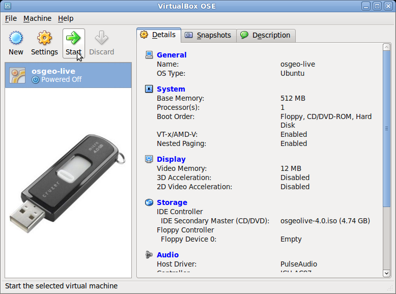
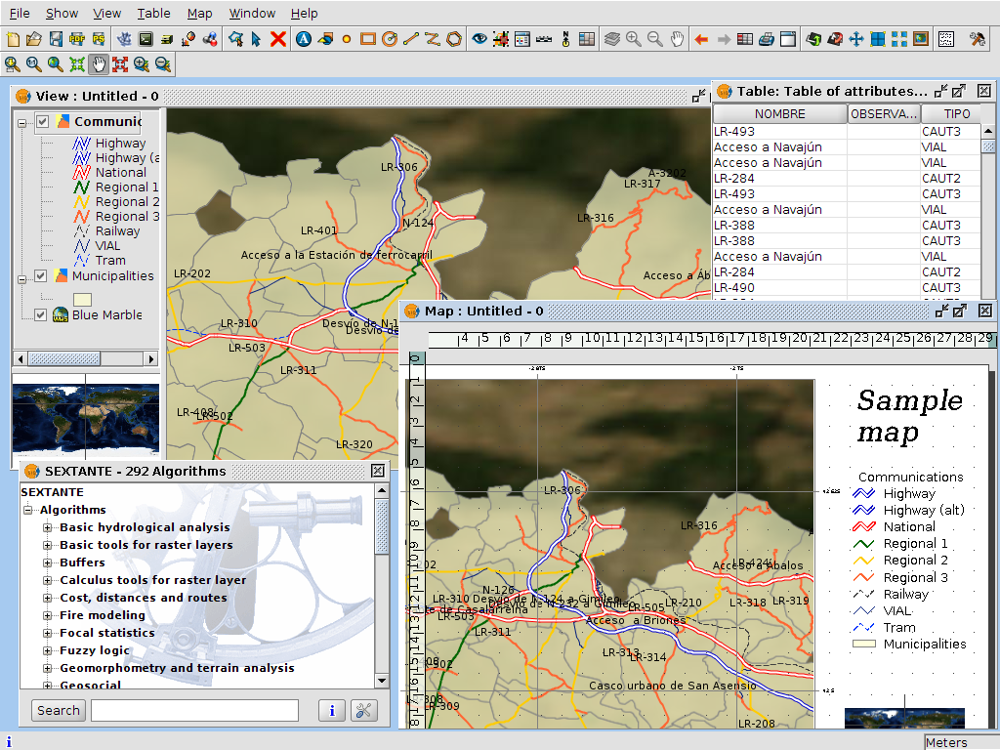
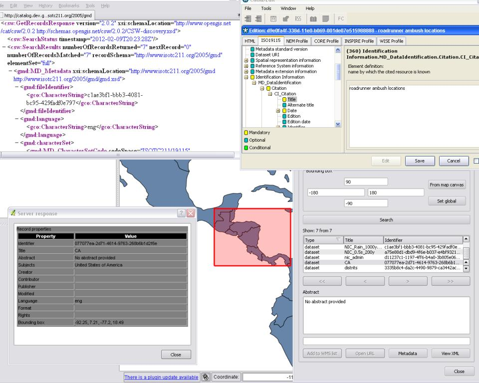
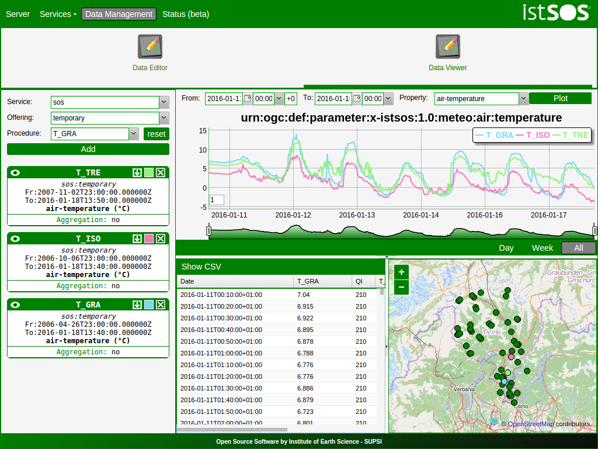
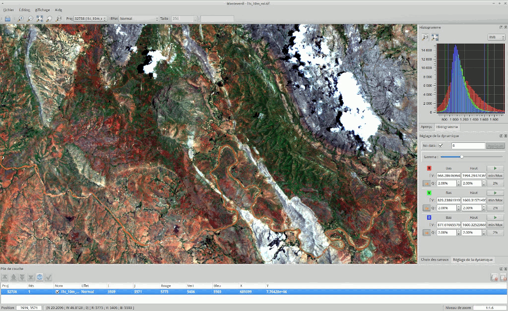

OSGeoLive

Version: 15
Released: August 2022
An Open Source Geospatial GNU/Linux Distribution
Find this presentation
Press ESC to zoom out, SPACE / arrow keys to navigate, s for slide notes. Pop-ups are blocked in some browsers due to security settings. Try Firefox or Safari.
What is new in 15.0

What is new in 14.0
What is new in 14.0
Updated to Lubuntu 22.04 LTS
What is new in 14.0
Updated core packages based on DebianGIS
What is new in 14.0
QGIS 3.10.13, GDAL 3.2.1, PROJ 7.2.1, PostGIS 3.1.0, GRASS 7.8.5, GeoServer 2.18.0, MapServer 7.6.1 and many more…
What is new in 14.0
New projects added: GeoStyler, Re3gistry
What is new in 14.0
Download OSGeoLive ISO or VMDK (with even more software)
What is new in 14.0
Documentation updates
What is new in 14.0
OSM data for Buenos Aires
What is new in 14.0
Updated packages contributed back to UbuntuGIS
What is new in 14.0
Full changelog
What is OSGeoLive?
Components on OSGeoLive
50+ Open Source Geospatial Applications
Sample Datasets
Consistent Overviews & Quickstarts
Translations
DVD / USB / Virtual Machine
Quality Criteria
Established, stable, working software
Active community

Production & Marketing Pipeline
Open Source Geospatial Foundation (OSGeo)

OSGeo
Non Profit for geospatial community, fostering:
Free and Open Source Software
Open Standards
Open Education
Open Research
Open Data
An Open Source Geospatial GNU/Linux Distribution

OGC Standards
Interoperability
Future Proof
Return on Investment

Desktop GIS
GRASS GIS

gvSIG Desktop
QGIS

OpenJUMP GIS

SAGA

uDig

Browser Facing GIS
GeoMoose

GeoNode

Mapbender

OpenLayers

GeoStyler

Cesium

GeoExt

Leaflet

Web Services
deegree

GeoNetwork

GeoServer

MapCache

MapServer

pycsw
PyWPS

istSOS
MapProxy

pygeoapi

Zoo Project

actinia

EOxServer

ncWMS

QGIS Server

Re3gistry

t-rex

52 North SOS

52 North WPS

Data Stores
PostGIS

pgRouting

Rasdaman

SpatiaLite

Navigation and Maps
Marble

iD editor

JOSM

GpsPrune

OpenCPN

OpenStreetMap

Spatial Tools
OTB
GMT

Jupyter Notebook

Mapnik

R

Domain Specific GIS
XyGrib

Data
Natural Earth

North Carolina USA Educational dataset

NetCDF Data Set

OpenStreetMap

Geospatial Libraries
GDAL/OGR

GEOS

GeoTools

PROJ

JTS

Credits
Developers and project maintainers
Authors and reviewers of the documentation
Translators
Project Steering Committee
Angelos Tzotsos (Chair)
Brian M Hamlin
Alex Mandel
Johan Van de Wauw
Bas Couwenberg
Massimo De Stefano
Astrid Emde
Nicolas Roelandt
Vicky Vergara
Enock Seth Nyamador
Get involved
Become a member of our team
Join our Mailing List and introduce yourself
Take part in our weekly IRC meetings (channel
#osgeoliveon Libre-)There are two ways you can help
Help improve OSGeoLive website and documentation
Submit new projects
Improving OSGeoLive Documentation
Proof-read, test and correct Quickstarts and Overviews
There is a good possibility to get to know cool software!
Translate and improve the documentation
Translation is made in Transifex
Local Chapters can easily get involved here
No technical experience necessary
Sponsors
OSGeo |
UCD ICE |
NTUA |
|
|
|
DebianGIS |
okeanos |
Georepublic |
|
|

{kind=link}
{kind=link}
{kind=link}
{kind=link}
{kind=link}
{kind=link}
{kind=link}
{kind=link}
{kind=link}
{kind=link}
{kind=link}
{kind=link}